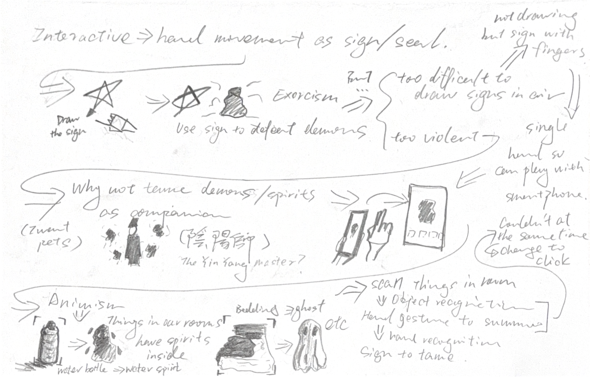
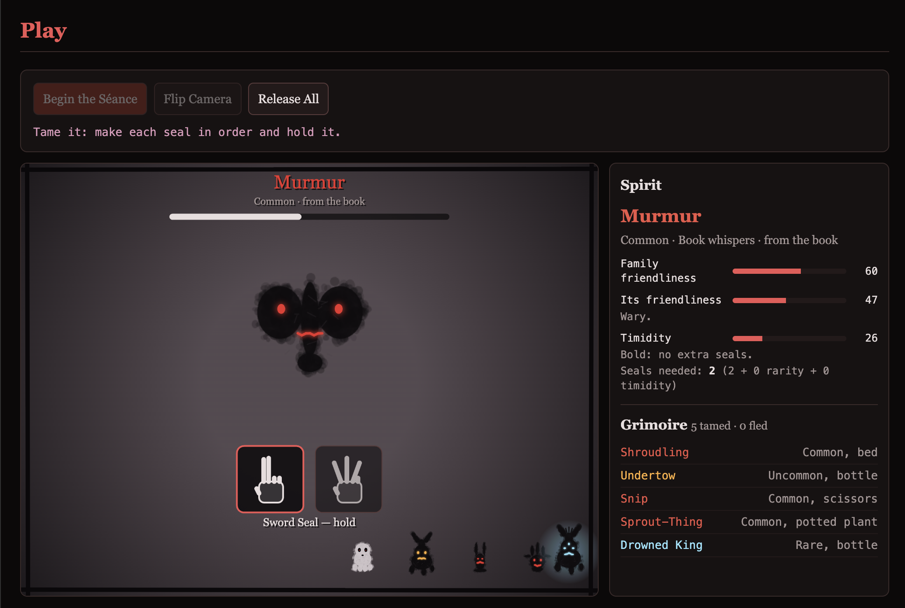
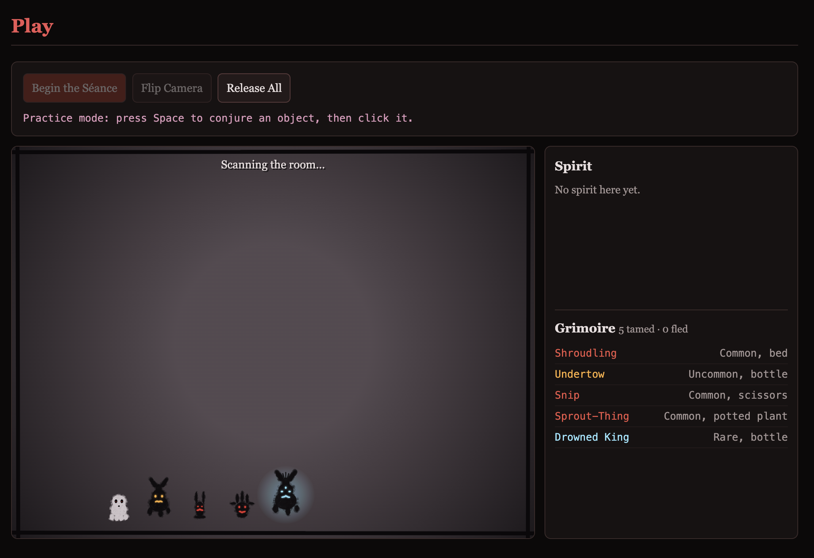
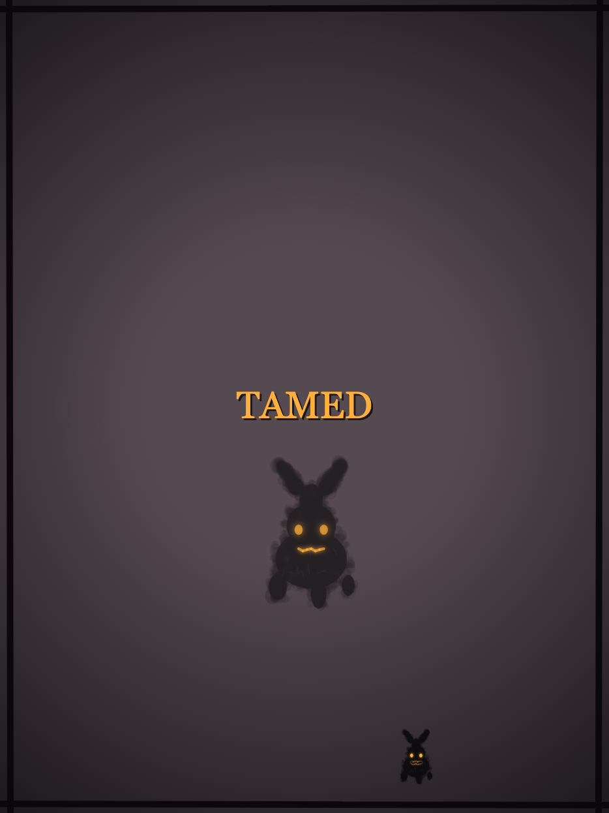
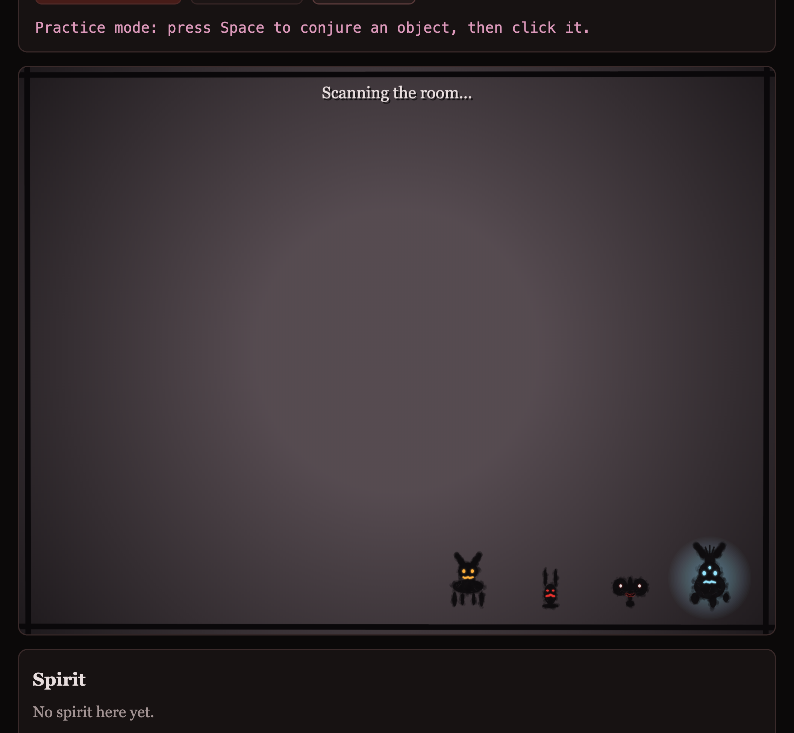
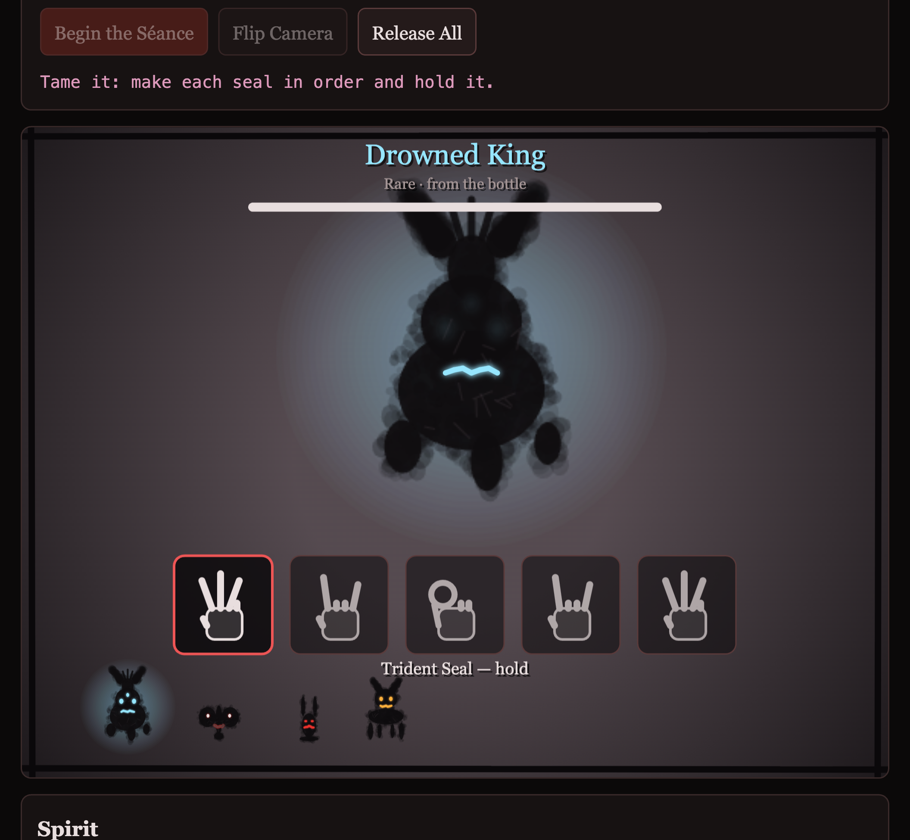

Familiars
Every object in your room has something living in it. Find it with the camera, wake it with a touch, and tame it with hand seals.
Play
How to Play
- Scan. Point the camera around the room. An object that houses a spirit glows red.
- Commune. Click the glowing object, or tap it on a touch screen, to wake the spirit. To leave it asleep, don't touch it.
- Tame. The spirit shows two to five seals. Make each one with one hand, in order, and hold it until its bar fills. A wrong seal frightens the spirit, and when its patience runs out it slips back into the object.
- Keep. A tamed spirit joins the line at the bottom of the screen and follows your hand.
No camera? The game falls back to a practice mode: press Space to conjure an object, click it, and hold 1–5 for the seals.
Seal Chart
Bestiary
Each kind of object houses one family of spirit. A spirit's rarity changes how it looks and what it is called, but never its family.
Proposal
A game about taming, not fighting. It is controlled by two things that are not connected to the computer: the everyday objects in a room, and one bare hand.
The idea comes from animism: every everyday item has a spirit living in it. The camera finds an object, a touch wakes its spirit, and the player tames it with hand seals, the way the Yin-Yang Masters do. A tamed spirit is not defeated. It stays and follows the player, like a pet.
The seals are simple shapes made with the fingers of one hand, so the game can be played on a smartphone held in the other hand.
It runs in the browser with p5.js and two ml5.js models: objectDetection finds the objects, and handPose reads the hand.
Rules
- Object → family. Drinking vessels hold water spirits, beds and couches hold sheet ghosts, screens hold phantoms, and so on (see the Bestiary).
- Rarity. Common 60%, Uncommon 30%, Rare 10%. Rarer spirits are bigger, grow horns (Uncommon) or a crown, a third eye and a cold glow (Rare), and their eyes change from red to amber to pale blue.
- Family friendliness. Fixed for each family: a hollow toy likes people, a blade imp does not.
- Individual friendliness. Rolled around the family's friendliness, so a spirit from a friendly family is usually friendly too. It sets the spirit's patience: 3.5 to 7 seconds for each seal it asks for. It also shows on its face.
- Timidity. Each spirit's own. A timid spirit asks for more seals, and loses more patience when it sees a wrong seal.
- Seals needed. 2 + rarity (0, 1 or 2) + timidity (0, 1 or 2), never more than 5.
Process
Ideation.

- Interactive. The brief asks for something controlled by real things that are not connected to the computer.
- Hand movement as a sign. A hand can make a sign, or a seal.
- Draw the sign in the air. Trace a shape, like a star, with a finger in front of the camera.
- Use the drawings to defeat demons. The project was first called Exorcism.
- Two problems.
- A sign is hard to draw by hand in the air. So the signs became shapes made with the fingers, and with one hand only, so the game can be played on a smartphone held in the other.
- Defeating demons is too violent. I need some peace in life.
- Tame them instead. Tame demons and spirits, like the Yin-Yang Masters do. (Also, I want pets.) A spirit that stays with its tamer is a familiar, so the project became Familiars.
- Animism. Everyday items have spirits, which can be summoned and tamed. So the objects in the room became the place the spirits come from.
Building it.
- Objects. COCO-SSD knows 80 kinds of object. I picked the ones found in a room and grouped them into ten families.
- Seals. handPose reads the position of the hand and each finger. I chose five seals that can be made with one hand and are not complicated shapes.
- Testing on a phone. My first version woke a spirit with an open palm held in front of the camera. On a phone the hand covered the object, and running both models at once was too slow. Now a tap on the glowing object wakes the spirit, and only one model runs at a time: objectDetection while scanning, handPose while a spirit is out.
- Spirits. Their look follows the drawing style of my Week 7 haunted house.
Development Screenshots




